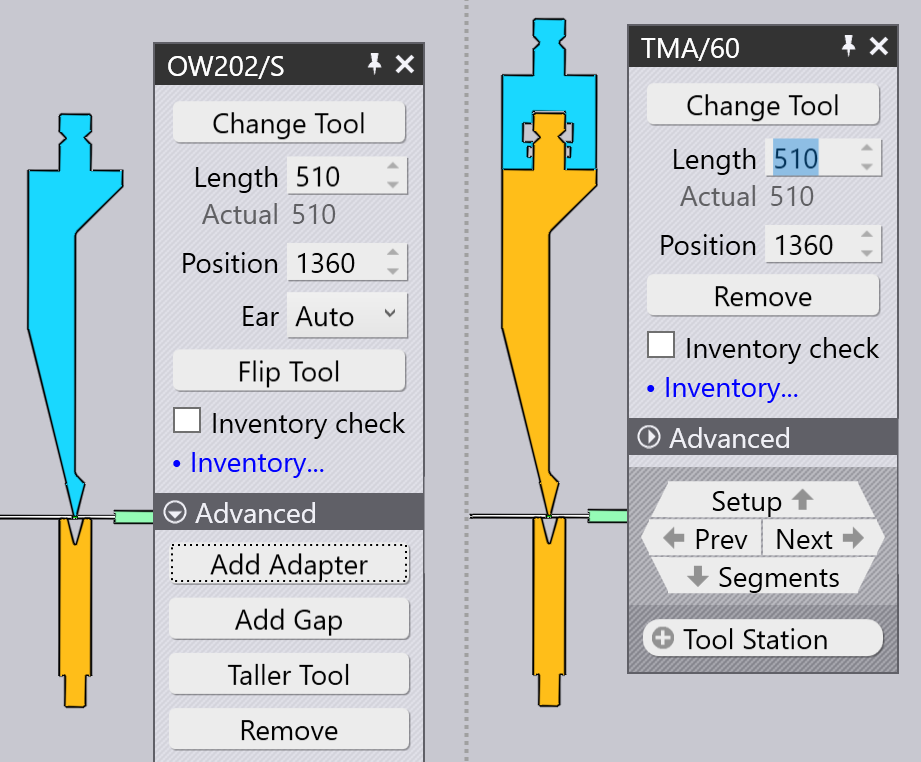

Editar un soporte de útil
Al hacer clic en un soporte de útil, se muestra el panel Soporte de plegado, y se puede utilizar para editar varias configuraciones del soporte de plegado y para realizar varias operaciones.
El panel de soporte de plegado

El panel de soporte de plegado tiene el aspecto que se muestra en la imagen adjunta. Los ajustes exactos y las operaciones disponibles variarán dependiendo de si está hace clic en un punzón, matriz o soporte de adaptador. Además, algunos ajustes pueden estar disponibles o no, dependiendo de capacidades de la máquina.
-
Haga clic en el botón Modificar el tipo de útil botón para reemplazar el útil utilizado para el soporte seleccionado con un útil diferente. (Consulte la sección a continuación para obtener más detalles sobre el selector de útiles que se utiliza para seleccionar un útil de sustitución).
-
La entrada Longitud se utiliza para ajustar la longitud de la estación. Cuando escriba un nuevo valor aquí, TecZone Bend compondrá la estación nuevamente utilizando un conjunto apropiado de segmentos para intentar ajustarse lo máximo posible a la longitud solicitada. Puede inspeccionar visualmente los segmentos que se están utilizando observando las líneas delimitadoras de los segmentos que se muestran en el soporte de plegado.
-
La entrada Posición se utiliza para establecer la posición del borde izquierdo del soporte, a lo largo de la mesa o viga de la máquina. La posición también se puede ajustar arrastrando el soporte hacia la izquierda o hacia la derecha. (Consulte la sección a continuación sobre cómo arrastrar el soporte).
-
El selector Útil de cuerno (que se muestra solo para los soportes de punzón) se puede utilizar para forzar que TecZone Bend utilice la izquierda y/o la derecha ear[1] piezas en la composición).
-
El Girar útil se utiliza para voltear el útil (de adelante hacia atrás). Se muestra cuando está editando un soporte que utiliza un útil asimétrico (como una herramienta de cuello de cisne, por ejemplo). La operación de volteo es lo suficientemente inteligente como para calcular si es necesario voltear soportes y útiles adicionales para mantener la consistencia.Por ejemplo, en la imagen a continuación, voltear el punzón OW_Z4 (utilizado para el plegado en Z) también voltea la matriz, el soporte e incluso la pieza para mantener la consistencia del proceso:

-
El Agregar adaptador se utiliza para añadir un extensor para aumentar la altura del punzón o matriz. Cuando añade un adaptador, el adaptador se selecciona y se muestra el panel para el adaptador (esto le permite cambiar el adaptador real que se está utilizando, o quitarlo).
 -
El Agregar ranura se utiliza para añadir un hueco en el soporte del útil para permitir que pase una pestaña sin colisiones (consulte la sección a continuación sobre Añadir un hueco para obtener más detalles al respecto).
-
Altura de útil gr. se utiliza para reemplazar los útiles seleccionados con diferentes útiles más altos de la misma familia.
-
Haga clic en Eliminar para quitar el soporte del útil. Se mostrará un error de punzón faltante o matriz faltante en el Bend Navigator para plegados que utilizan esta estación, y esto se puede corregir utilizando la opción Añadir en la barra de comandos a la izquierda para añadir un nuevo soporte.
-
El selector Útil de medición se utiliza para alternar entre los diferentes pares de sensores ACB que se pueden utilizar para esta pieza. La selección depende del espesor de la chapa y el punzón que se está utilizando.
-
Si la casilla de verificación Supervisión de la cantidad de piezas está seleccionada, los segmentos utilizados se comprueban con el inventario disponible de piezas (que se puede editar haciendo clic en el enlace Administración de útiles…). Si se utilizan segmentos que no están en el inventario, se dibuja un símbolo especial en forma de trébol sobre ellos, como se puede ver en la imagen siguiente para las piezas de 40 mm y 45 mm cerca del centro del punzón:

Cuando edita un soporte de útil utilizando cualquiera de estos ajustes y operaciones, TecZone Bend valida inmediatamente el estado de todas las operaciones de plegado, realizando diversas comprobaciones como colisiones, usabilidad del útil, etc. El estado del Bend Navigator se actualiza inmediatamente y en tiempo real, lo que facilita mucho probar diferentes ajustes con una respuesta inmediata y precisa.
La ventana Reemplazar útil
Al hacer clic en el botón Modificar el tipo de útil, se muestra la ventana Reemplazar útil:

Esta ventana muestra todos los útiles de sustitución posibles.
-
Utilice la jerarquía de la izquierda para reducir las opciones; por ejemplo, podría elegir mostrar solo útiles de cuello de cisne, para facilitar la selección.
-
Utilice el selector Clasificar en la parte superior para ordenar las herramientas por nombre, altura, radio u otros criterios de clasificación (el conjunto exacto de criterios de clasificación depende de si se está reemplazando un punzón, matriz o adaptador).
-
Puede escribir un nombre de útil (o nombre corto) en el cuadro Búsqueda para reducir la lista rápidamente. También se puede escribir el nombre parcial de un útil; por ejemplo, OW200 coincidirá con los útiles OW200, OW200/S y OW200/K.
-
Utilice el control deslizante Escala para ajustar los tamaños de las imágenes del útil. El útil que se utiliza actualmente tiene un relleno azul y un contorno grueso. El sombreado azul claro indica otros útiles que se utilizan en esta pieza.
-
Desactive la casilla de verificación Filtro para tener una vista sin restricciones de todos los útiles (independientemente de si son adecuados o no). En esta vista, los útiles que no son adecuados están en gris, y mover el ratón sobre uno de estos útiles indica por qué no está disponible para la selección:

Al mover el ratón sobre las imágenes de los útiles, vuelve a calcular TecZone Bend inmediatamente los soportes de útiles seleccionados utilizando el útil recién seleccionado, y se puede ver en tiempo real si el útil que se está considerando causará algún problema de colisión o no (los plegados correspondientes en el Bend Navigator se iluminarán instantáneamente en rojo si hay una colisión). Esta vista previa en tiempo real hace que sea muy fácil para usted experimentar con varias opciones de útiles hasta que encuentre uno que funcione.
Si hace clic en uno de los útiles, se hace la elección y se aplica el nuevo útil a la pieza. Si pulsa Esc en su lugar, las opciones de vista previa que ha elegido se revierten y el útil original se deja sin cambios.
Navegación y selección
El panel de soportes de plegado muestra varios botones en los subpaneles de navegación y selección.
-
Utilice el botón de navegación Sujeción para pasar a editar toda la configuración de plegado. Consulte la página del editor de configuración para obtener más información al respecto.
-
Utilice los botones Volver y Continuar para desplazarse por la edición de los diferentes soportes de útiles en esta configuración.
-
Utilice el botón de navegación Segmentos para bajar un nivel y editar los segmentos individuales que componen este soporte. La siguiente sección sobre la edición de segmentos de soporte de útiles proporciona más información al respecto.
-
Utilice el selector Estación de útiles para seleccionar todos los soportes de herramientas que componen esta estación. Esto seleccionará todos los punzones, matrices y soportes que estén alineados con el soporte seleccionado, de modo que se puedan editar o mover todos juntos.
-
Utilice el selector Mismo útil para seleccionar otros soportes de útiles que usan el mismo útil. Esto suele ser útil antes de utilizar una operación de cambio de útil; seleccionar todas las estaciones utilizando el útil especificado amplía la selección disponible de útiles de reemplazo.[2]
Edición de varios soportes

Si selecciona varios soportes usando Shift+Clic en todos ellos, se pueden editar juntos. Solo se pueden editar los ajustes y operaciones comunes a todos los soportes.
Campos como Longitud o Posición se muestran para la edición solo si son los mismos para todos los soportes.
Si tiene varias estaciones, es útil seleccionar todos los punzones o todas las matrices antes de realizar una operación de cambio de útil. En este caso, la elección de útiles de recambio disponibles es más amplia (ya que no hay peligro de que los punzones y las matrices de diferente altura provoquen una colisión).
Arrastrar un soporte de herramienta de plegado

La Posición entrada se puede utilizar para establecer una posición precisa para un soporte.A veces, es más fácil arrastrar un soporte de plegado a una nueva posición. Para ello:
-
Haga clic en el soporte de plegado para seleccionarlo (seleccione varios soportes usando Shift+Clic)
-
Haga clic y comience a arrastrar hacia la izquierda/derecha para mover el soporte seleccionado.Como se muestra en la imagen anterior, al mover el ratón sobre un soporte seleccionado, se muestra la punta de una flecha que indica que se puede arrastrar el soporte seleccionado. Cuando arrastra el soporte, los indicadores de ajuste le permiten alinearlo fácilmente con otros soportes existentes.Si recoge un soporte cerca de su borde izquierdo, entonces los bordes izquierdos de todos los soportes se utilizan para encajar. Si recoges un soporte por el centro, entonces la línea central se utiliza para encajar, y así sucesivamente.
Operaciones avanzadas
Aquí hay algunas operaciones más avanzadas con el panel del editor de soporte de plegado.
Edición de segmentos de soporte de útil
Hacer clic en el botón de navegación Segmentos cuando se está editando un soporte de útil de plegado abre el panel Segmento de útil, que se parece a la imagen de al lado.

-
El Útil selector se utiliza para reemplazar el segmento de útil seleccionado con una pieza más larga o más corta, o un tipo diferente de pieza.
-
Los botones < Desplazar y Desplazar > se utilizan para desplazar el segmento seleccionado hacia la izquierda o hacia la derecha en la composición. Esto no cambia la longitud total de la composición, pero es útil para mover una pieza del sensor de calibración a la izquierda o la derecha para evitar agujeros, por ejemplo.
-
Los botones Añadir y Eliminar se utilizan para añadir nuevos segmentos en la composición, o para eliminar el segmento seleccionado.
-
Los botones de navegación Volver y Continuar se utilizan para realizar un ciclo a través de la edición de los diferentes segmentos en el soporte de plegado. Como muestra la imagen de arriba, el segmento de útil que se está editando se resalta en azul.
-
El botón de navegación Preparación se utiliza para subir un nivel, y editar todo el soporte de plegado, en lugar de segmentos individuales.
Añadir un hueco en un soporte
A veces es útil añadir un espacio estrecho en un soporte de útil, normalmente para permitir el paso de una lengüeta sin que se produzca una colisión. Para ello, haga clic en el botón
Agregar ranura (que aparece si el soporte del útil es lo suficientemente largo). Se abre una pequeña sección en el panel, con un conjunto de entradas interrelacionadas para establecer el margen izquierdo, el margen derecho y el espacio real. Dado que la suma de estos tres debe ser igual a la longitud del soporte del útil, al editar dos de ellos, el tercero se ajustará automáticamente.La siguiente imagen muestra esta operación en curso. Tenemos una lengüeta que choca con el punzón, y estamos ajustando los márgenes izquierdo y derecho hasta que el espacio propuesto quede alineado con el punto donde la lengüeta se cruza con el punzón (puede ver el espacio propuesto representado como dos líneas naranjas trazadas en el soporte de plegado).

Al hacer clic en el botón Aceptar en este subpanel, se crea el hueco y se puede ver que el error de colisión se ha resuelto:

| Al editar una estación que utiliza un portapunzón, TecZone Bend pregunta si el espacio debe introducirse solo para el punzón o tanto para el punzón como para el soporte. |
Uso de un adaptador de doble V
Es posible utilizar un adaptador de doble V para montar dos matrices una al lado de la otra. Para hacer esto manualmente, use el botón Agregar adaptador para añadir un adaptador a una matriz, y luego use el botón Modificar el tipo de útil para cambiar ese adaptador a un adaptador de doble V. Ahora, es posible añadir una segunda matriz a la otra ranura del adaptador de doble V utilizando la orden Añadir de la barra de comandos y seleccionando un soporte de matriz.Cuando tiene un troquel montado en una ranura de un soporte de doble V, puede cambiarlo a la otra ranura haciendo clic en el botón Modificar eje I que se muestra: